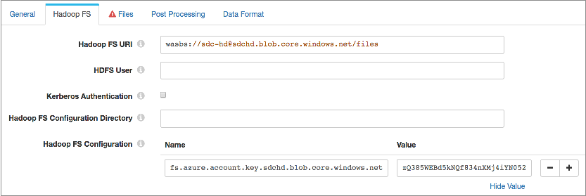

Hadoop FS Standalone
The Hadoop FS Standalone origin reads files in HDFS. The origin can use multiple threads to enable the parallel processing of files. The files to be processed must all share a file name pattern and be fully written. You can also configure the origin to read from Azure HDInsight.
Use the Hadoop FS Standalone origin only in pipelines configured for standalone execution mode. To read from HDFS in cluster execution mode, use the Hadoop FS origin.
When you configure the Hadoop FS Standalone origin, you define the directory to use, read order, file name pattern, file name pattern mode, and the first file to process. You can use glob patterns or regular expressions to define the file name pattern that you want to use.
When using the last-modified timestamp read order, you can configure the origin to read from subdirectories. To use multiple threads for processing, specify the number of threads to use. You can also enable reading compressed files. After processing a file, the Hadoop FS Standalone origin can keep, archive, or delete the file.
When the pipeline stops, the Hadoop FS Standalone origin notes where it stops reading. When the pipeline starts again, the origin continues processing from where it stopped by default. You can reset the origin to process all requested files.
The origin generates record header attributes that enable you to use the origins of a record in pipeline processing.
When necessary, you can enable Kerberos authentication and specify a Hadoop user. You can also use Hadoop configuration files and add other Hadoop configuration properties as needed.
The origin can generate events for an event stream. For more information about dataflow triggers and the event framework, see Dataflow Triggers Overview.
File Name Pattern and Mode
Use a file name pattern to define the files that the Hadoop FS Standalone origin processes. You can use either a glob pattern or a regular expression to define the file name pattern.
The Hadoop FS Standalone origin processes files based on the file name pattern mode, file name pattern, and specified directory. For example, if you specify a /logs/weblog/ directory, glob mode, and *.json as the file name pattern, the origin processes all files with the "json" extension in the /logs/weblog/ directory.
The origin processes files in order based on the specified read order.
For more information about glob syntax, see https://en.wikipedia.org/wiki/Glob_(programming)#Syntax. For more information about regular expressions, see Regular Expressions Overview.
Read Order
The Hadoop FS Standalone origin reads files in ascending order based on the timestamp or file name:
- Last Modified Timestamp
- The Hadoop FS Standalone origin can read files in ascending order based on the last modified timestamp associated with the file. When the origin reads from a secondary location - not the directory where the files are created and written - the last-modified timestamp should be when the file is moved to the directory to be processed.
-
Tip: Avoid moving files using commands that preserve the existing timestamp, such as cp -p. Preserving the existing timestamp can be problematic in some cases, such as moving files across time zones.
- When ordering based on timestamp, any files with the same timestamp are read in lexicographically ascending order based on the file names.
- For example, when reading files with the log*.json file name pattern, the origin reads the following files in the following order:
-
File Name Last Modified log-1.json APR 24 2016 14:03:35 log-903.json APR 24 2016 14:05:03 log-2.json APR 24 2016 14:45:11 log-3.json APR 24 2016 14:45:11 - Notice, the log-2.json and log-3.json files have identical timestamps, and so are processed in lexicographically ascending order based on their file names.
- Lexicographically Ascending File Names
- The Hadoop FS Standalone origin can read files in lexicographically ascending order based on file names. Note that lexicographically ascending order reads the numbers 1 through 11 as follows:
-
1, 10, 11, 2, 3, 4... 9
- For example, when reading files with the web*.log file name
pattern, the Hadoop FS Standalone origin reads the following files in the
following
order:
web-1.log web-10.log web-11.log web-2.log web-3.log web-4.log web-5.log web-6.log web-7.log web-8.log web-9.log
- To read these files in logical and lexicographically ascending order, you
might add leading zeros to the file naming convention as
follows:
web-0001.log web-0002.log web-0003.log ... web-0009.log web-0010.log web-0011.log
Multithreaded Processing
The Hadoop FS Standalone origin uses multiple concurrent threads to process data based on the Number of Threads property.
Each thread reads data from a single file, and each file can have a maximum of one thread read from it at a time. The file read order is based on the configuration for the Read Order property.
As the pipeline runs, each thread connects to the origin system and creates a batch of data, and passes the batch to an available pipeline runner. A pipeline runner is a sourceless pipeline instance - an instance of the pipeline that includes all of the processors and destinations in the pipeline and performs all pipeline processing after the origin.
Each pipeline runner processes one batch at a time, just like a pipeline that runs on a single thread. When the flow of data slows, the pipeline runners wait idly until they are needed.
Multithreaded pipelines preserve the order of records within each batch, just like a single-threaded pipeline. But since batches are processed by different pipeline instances, the order that batches are written to destinations is not ensured.
For example, say you configure the origin to read files from a directory using 5 threads and the Last Modified Timestamp read order. When you start the pipeline, the origin creates five threads, and Data Collector creates a matching number of pipeline runners.
The Hadoop FS Standalone origin assigns a thread to each of the five oldest files in the directory. Each thread processes its assigned file, passing batches of data to the origin. Upon receiving data, the origin passes a batch to each of the pipeline runners for processing.
After each thread completes processing a file, it continues to the next file based on the last-modified timestamp, until all files are processed.
For more information about multithreaded pipelines, see Multithreaded Pipeline Overview.
Reading from Subdirectories
When using the Last Modified Timestamp read order, the Hadoop FS Standalone origin can read files in subdirectories of the specified file directory.
When you configure the origin to read from subdirectories, it reads files from all subdirectories. It reads files in ascending order based on timestamp, regardless of the location of the file within the directory.
| File Name | Directory | Last Modified Timestamp |
| log-1.json | /logs/west/ | APR 24 2016 14:03:35 |
| log-0054.json | /logs/east/ | APR 24 2016 14:05:03 |
| log-0055.json | /logs/west/ | APR 24 2016 14:45:11 |
| log-2.json | /logs/ | APR 24 2016 14:45:11 |
Post-Processing Subdirectories
When the Hadoop FS Standalone origin reads from subdirectories, it uses the subdirectory structure when archiving files during post-processing.
You can archive files when the origin completes processing a file or when it cannot fully process a file.
| File Name | Archive Directory |
| log-1.json | /processed/logs/west/ |
| log-0054.json | /processed/logs/east/ |
| log-0055.json | /processed/logs/west/ |
| log-2.json | /processed/logs/ |
First File for Processing
Configure a first file for processing when you want Hadoop FS Standalone to ignore one or more existing files in the directory.
When you define a first file to process, the Hadoop FS Standalone origin starts processing with the specified file and continues based on the read order and file name pattern. When you do not specify a first file, the origin processes all files in the directory that match the file name pattern.
For example, say the Hadoop FS Standalone origin reads files based on last-modified timestamp. To ignore all files older than a particular file, use that file name as the first file to process.
Similarly, say you have the origin reading files based on lexicographically ascending file names, and the file directory includes the following files: web_001.log, web_002.log, web_003.log.
If you configure web_002.log as the first file, the origin reads web_002.log and continues to web_003.log. It skips web_001.log.
Reading from Azure HDInsight
You can use the HDP stage libraries to access Azure blob storage using the WASB protocol. This enables the Hadoop FS Standalone origin to read from Azure HDInsight.
To read from an Azure HDInsight cluster, Data Collector can be installed anywhere. It can be installed on a node in the HDInsight cluster or outside of the cluster entirely.
- On the General tab of the Hadoop FS Standalone origin, for the Stage Library property, select the HDP stage library version 2.4 or later.
- Configure Azure credentials in one of the following ways:
- If the Azure credentials are defined in the HDFS configuration file
core-site.xml, configure the origin to access the
file.
- On the Hadoop FS tab, configure the Hadoop FS Configuration Directory property to point to the directory that includes the file.
- If the credentials are not defined in the core-site.xml
file, use a Hadoop FS configuration property to pass the Azure
credentials:
- In the origin, on the Hadoop FS tab, click
the Add icon to add a new Hadoop FS
configuration property.
You can use simple or bulk edit mode to add configuration properties.
- Enter the following property name, using the Azure storage
account name for <storage account
name>:
fs.azure.account.key.<storage account name>.blob.core.windows.net
For example, if the storage account name is "sdchd", then enter the following name for the property:fs.azure.account.key.sdchd.blob.core.windows.net
Tip: You can find the Azure storage account name on the Access Keys page in the Microsoft Azure portal. To view the page in the Microsoft Azure portal, click . A page like the following appears, with the storage account name and access keys:
- For the value of the Hadoop FS Configuration property, enter an
access key value for the Azure storage account. You can use any
valid key.Tip: The account key value also displays on the Access Keys page. For example, on the image above, you could use either the key1 or key2 value.
- In the origin, on the Hadoop FS tab, click
the Add icon to add a new Hadoop FS
configuration property.
- If the Azure credentials are defined in the HDFS configuration file
core-site.xml, configure the origin to access the
file.
- In the origin, on the Hadoop FS tab, configure the
Hadoop FS URI property using the following
structure:
<wasb[s]>://<container name>@<storage account name>.blob.core.windows.net/<path to files>
In the URI, <container name> is the Azure container name. And <storage account name> is the same Azure storage account name that you used for the Hadoop FS configuration property.
For example, for a sdc-hd container in a storage account named sdchd, with all files in a "files" directory, you would define the Hadoop FS URI as follows:wasbs://sdc-hd@sdchd.blob.core.windows.net/files
Tip: You can find the container name and storage account name on the Essentials page in the Microsoft Azure portal. For a standard storage account, in the Microsoft Azure portal, click . For a blob storage account, click .A page like the following displays with the container name and storage account name:
Though the host name for the Hadoop FS URI is <storage account name>.blob.core.windows.net, you can alternatively use the host name of the Azure blob service endpoint as the hostname for the Hadoop FS URI.
Example
The following image shows how to configure the Hadoop FS Standalone origin to read from HDInsight using the Azure account information in the examples above:

Record Header Attributes
The Hadoop FS Standalone origin creates record header attributes that include information about the originating file for the record.
When the origin processes Avro data, it includes the Avro schema in an avroSchema record header attribute.
You can use the record:attribute or record:attributeOrDefault functions to access the information in the attributes. For more information about working with record header attributes, see Working with Header Attributes.
- avroSchema - When processing Avro data, provides the Avro schema.
- baseDir - Base directory containing the file where the record originated.
- filename - Provides the name of the file where the record originated.
- file - Provides the file path and file name where the record originated.
- mtime - Provides the last-modified time for the file.
- offset - Provides the file offset in bytes. The file offset is the location in the file where the record originated.
- atime - Provides the last accessed time.
- isDirectory - Indicates if the file is a directory.
- isSymbolicLink - Indicates if the file is a symbolic link.
- size - Provides the file size.
- owner - Provides the file owner.
- group - Provides the group associated with the file.
- blocksize - Provides the block size of the file.
- replication - Provides the replication of the file.
- isEncrypted - Indicates if the file is encrypted.
Event Generation
The Hadoop FS Standalone origin can generate events that you can use in an event stream. When you enable event generation, the origin generates event records each time the origin starts or completes reading a file. It can also generate events when it completes processing all available data and the configured batch wait time has elapsed.
- With the Pipeline Finisher executor to
stop the pipeline and transition the pipeline to a Finished state when
the origin completes processing available data.
When you restart a pipeline stopped by the Pipeline Finisher executor, the origin continues processing from the last-saved offset unless you reset the origin.
For an example, see Case Study: Stop the Pipeline.
- With the Email executor to send a custom email
after receiving an event.
For an example, see Case Study: Sending Email.
- With a destination to store event information.
For an example, see Case Study: Event Storage.
For more information about dataflow triggers and the event framework, see Dataflow Triggers Overview.
Event Records
| Record Header Attribute | Description |
|---|---|
| sdc.event.type | Event type. Uses one of the following types:
|
| sdc.event.version | An integer that indicates the version of the event record type. |
| sdc.event.creation_timestamp | Epoch timestamp when the stage created the event. |
The Hadoop FS Standalone origin can generate the following types of event records:
- new-file
- The Hadoop FS Standalone origin generates a new-file event record when it starts processing a new file.
- New-file event records have the sdc.event.type set to new-file and include the
following field:
Event Record Field Description filepath Path and name of the file that the origin started or finished processing. - finished-file
- The Hadoop FS Standalone origin generates a finished-file event record when it finishes processing a file.
- Finished-file event records have the sdc.event.type set to finished-file and
include the following fields:
Event Record Field Description filepath Path and name of the file that the origin started or finished processing. record-count Number of records successfully generated from the file. error-count Number of error records generated from the file. - no-more-data
- The Hadoop FS Standalone origin generates a no-more-data event record when the origin completes processing all available records and the number of seconds configured for Batch Wait Time elapses without any new files appearing to be processed.
- No-more-data event records generated by the Hadoop FS Standalone origin have the
sdc.event.type set to no-more-data and include the following fields:
Event Record Field Description record-count Number of records successfully generated since the pipeline started or since the last no-more-data event was created. error-count Number of error records generated since the pipeline started or since the last no-more-data event was created. file-count Number of files the origin attempted to process. Can include files that were unable to be processed or were not fully processed.
Buffer Limit and Error Handling
The Hadoop FS Standalone origin passes each record to a buffer. The size of the buffer determines the maximum size of the record that can be processed. Decrease the buffer limit when memory on the Data Collector machine is limited. Increase the buffer limit to process larger records when memory is available.
- Discard
- The origin discards the record and all remaining records in the file, and then continues processing the next file.
- Send to Error
- With a buffer limit error, the origin cannot send the record to the pipeline
for error handling because it is unable to fully process the record.
Instead, the origin creates a message stating that a buffer overrun error occurred. The message includes the file and offset where the buffer overrun error occurred. The information displays in the pipeline history and displays as an alert when you monitor the pipeline.
If an error directory is configured for the stage, the origin moves the file to the error directory and continues processing the next file.
- Stop Pipeline
- The origin stops the pipeline and creates a message stating that a buffer overrun error occurred. The message includes the file and offset where the buffer overrun error occurred. The information displays as an alert and in the pipeline history.
-
Note: You can also check the Data Collector log file for error details.
Kerberos Authentication
You can use Kerberos authentication to connect to HDFS. When you use Kerberos authentication, Data Collector uses the Kerberos principal and keytab to connect to HDFS. By default, Data Collector uses the user account who started it to connect.
The Kerberos principal and keytab are defined in the Data Collector configuration file, $SDC_CONF/sdc.properties. To use Kerberos authentication, configure all Kerberos properties in the Data Collector configuration file, and then enable Kerberos in the Hadoop FS Standalone origin.
For more information about enabling Kerberos authentication for Data Collector, see Kerberos Authentication.
HDFS Properties and Configuration Files
- HDFS configuration files
- You can use the following HDFS configuration files with the Hadoop FS
Standalone origin:
- core-site.xml
- hdfs-site.xml
- To use HDFS configuration files:
- Store the files or a symlink to the files in the Data Collector resources directory.
- In the Hadoop FS Standalone origin, configure the Hadoop FS Configuration Directory property to specify the location of the files.
Note: For a Cloudera Manager installation, Data Collector automatically creates a symlink to the files named hadoop-conf. Enter hadoop-conf for the location of the files in the Hadoop FS Standalone origin. - Individual properties
- You can configure individual HDFS properties in the origin. To add an HDFS
property, you specify the exact property name and the value. The Hadoop FS
Standalone origin does not validate the property names or
values.Note: Individual properties override properties defined in the HDFS configuration file.
HDFS User
Data Collector can either use the currently logged in Data Collector user or a user configured in the Hadoop FS Standalone origin to read from HDFS.
A Data Collector configuration property can be set that requires using the currently logged in Data Collector user. When this property is not set, you can specify a user in the origin. For more information about Hadoop impersonation and the Data Collector property, see Hadoop Impersonation Mode.
Note that the origin uses a different user account to connect to HDFS. By default, Data Collector uses the user account who started it to connect to external systems. When using Kerberos, Data Collector uses the Kerberos principal.
- On Hadoop, configure the user as a proxy user and
authorize the user to impersonate a Hadoop user.
For more information, see the Hadoop documentation.
- In the Hadoop FS Standalone origin, on the Hadoop FS tab, configure the HDFS User property.
Data Formats
- Avro
- Generates a record for every Avro record. Includes a "precision" and "scale" field attribute for each Decimal field. For more information about field attributes, see Field Attributes.
- The origin writes the Avro schema to an avroSchema record header attribute. For more information about record header attributes, see Record Header Attributes.
- The origin expects each file to contain the Avro schema and uses the schema to process the Avro data.
- The origin reads files compressed by Avro-supported compression codecs without requiring additional configuration.
- Delimited
- Generates a record for each delimited line. You can use the
following delimited format types:
- Default CSV - File that includes comma-separated values. Ignores empty lines in the file.
- RFC4180 CSV - Comma-separated file that strictly follows RFC4180 guidelines.
- MS Excel CSV - Microsoft Excel comma-separated file.
- MySQL CSV - MySQL comma-separated file.
- Postgres CSV - Postgres comma-separated file.
- Postgres Text - Postgres text file.
- Tab-Separated Values - File that includes tab-separated values.
- Custom - File that uses user-defined delimiter, escape, and quote characters.
- You can use a list or list-map root field type for delimited data, optionally including the header information when available. For more information about the root field types, see Delimited Data Root Field Type.
- When using a header line, you can allow processing records with additional columns. The additional columns are named using a custom prefix and integers in sequential increasing order, such as _extra_1, _extra_2. When you disallow additional columns when using a header line, records that include additional columns are sent to error.
- You can also replace a string constant with null values.
- When a record exceeds the user-defined maximum record length, the
origin cannot continue processing data in the file. Records
already processed from the file are passed to the pipeline. The
behavior of the origin is then based on the error handling
configured for the stage:
- Discard - The origin continues processing with the next file, leaving the partially-processed file in the directory.
- To Error - The origin continues processing with the next file. If a post-processing error directory is configured for the stage, the origin moves the partially-processed file to the error directory. Otherwise, it leaves the file in the directory.
- Stop Pipeline - The origin stops the pipeline.
- JSON
- Generates a record for each JSON object. You can process JSON files that include multiple JSON objects or a single JSON array.
- When an object exceeds the maximum object length defined for the
origin, the origin cannot continue processing data in the file.
Records already processed from the file are passed to the
pipeline. The behavior of the origin is then based on the error
handling configured for the stage:
- Discard - The origin continues processing with the next file, leaving the partially-processed file in the directory.
- To Error - The origin continues processing with the next file. If a post-processing error directory is configured for the stage, the origin moves the partially-processed file to the error directory. Otherwise, it leaves the file in the directory.
- Stop Pipeline - The origin stops the pipeline.
- Log
- Generates a record for every log line.
- When a line exceeds the user-defined maximum line length, the origin truncates longer lines.
- You can include the processed log line as a field in the record. If the log line is truncated, and you request the log line in the record, the origin includes the truncated line.
- You can define the log format or type to be read.
- Protobuf
- Generates a record for every protobuf message.
- Protobuf messages must match the specified message type and be described in the descriptor file.
- When the data for a record exceeds 1 MB, the origin cannot continue processing data in the file. The origin handles the file based on file error handling properties and continues reading the next file.
- For information about generating the descriptor file, see Protobuf Data Format Prerequisites.
- SDC Record
- Generates a record for every record. Use to process records generated by a Data Collector pipeline using the SDC Record data format.
- For error records, the origin provides the original record as read from the origin in the original pipeline, as well as error information that you can use to correct the record.
- When processing error records, the origin expects the error file names and contents as generated by the original pipeline.
- Text
- Generates a record for each line of text or for each section of text based on a custom delimiter.
- When a line or section exceeds the maximum line length defined for the origin, the origin truncates it. The origin adds a boolean field named Truncated to indicate if the line was truncated.
- For more information about processing text with a custom delimiter, see Text Data Format with Custom Delimiters.
- Whole File
- Streams whole files from the origin system to the destination system. You can specify a transfer rate or use all available resources to perform the transfer.
- The origin generates two fields: one for a file reference and one for file information. For more information, see Whole File Data Format.
- XML
- Generates records based on a user-defined delimiter element. Use an XML element directly under the root element or define a simplified XPath expression. If you do not define a delimiter element, the origin treats the XML file as a single record.
- Generated records include XML attributes and namespace declarations as fields in the record by default. You can configure the stage to include them in the record as field attributes.
- You can include XPath information for each parsed XML element and XML attribute in field attributes. This also places each namespace in an xmlns record header attribute.
-
Note: Field attributes and record header attributes are written to destination systems automatically only when you use the SDC RPC data format in destinations. For more information about working with field attributes and record header attributes, and how to include them in records, see Field Attributes and Record Header Attributes.
- When a record exceeds the user-defined maximum record length, the
origin cannot continue processing data in the file. Records
already processed from the file are passed to the pipeline. The
behavior of the origin is then based on the error handling
configured for the stage:
- Discard - The origin continues processing with the next file, leaving the partially-processed file in the directory.
- To Error - The origin continues processing with the next file. If a post-processing error directory is configured for the stage, the origin moves the partially-processed file to the error directory. Otherwise, it leaves the file in the directory.
- Stop Pipeline - The origin stops the pipeline.
- Use the XML data format to process valid XML documents. For more
information about XML processing, see Reading and Processing XML Data. Tip: If you want to process invalid XML documents, you can try using the text data format with custom delimiters. For more information, see Processing XML Data with Custom Delimiters.
Configuring a Hadoop FS Standalone Origin
-
In the Properties panel, on the General tab, configure the
following properties:
General Property Description Name Stage name. Description Optional description. Produce Events 
Generates event records when events occur. Use for event handling. 
On Record Error Error record handling for the stage: - Discard - Discards the record.
- Send to Error - Sends the record to the pipeline for error handling.
- Stop Pipeline - Stops the pipeline.
-
On the Hadoop FS tab, configure the following
properties:
Hadoop FS Property Description Hadoop FS URI HDFS URI. HDFS User The HDFS user to use to access HDFS. When using this property, make sure HDFS is configured appropriately. When not configured, the pipeline uses the currently logged in Data Collector user.
Not configurable when Data Collector is configured to use the currently logged in Data Collector user. For more information, see Hadoop Impersonation Mode.
Kerberos Authentication Uses Kerberos credentials to connect to HDFS. When selected, uses the Kerberos principal and keytab defined in the Data Collector configuration file, $SDC_CONF/sdc.properties.
Hadoop FS Configuration Directory Location of the HDFS configuration files. For a Cloudera Manager installation, enter hadoop-conf. For all other installations, use a directory or symlink within the Data Collector resources directory.
You can use the following files with the Hadoop FS destination:- core-site.xml
- hdfs-site.xml
Note: Properties in the configuration files are overridden by individual properties defined in the stage.Hadoop FS Configuration Additional HDFS properties to use. To add properties, click Add and define the property name and value. Use the property names and values as expected by HDFS.
-
On the Files tab, configure the following
properties:
File Property Description File Directory The HDFS directory where source files are stored. Enter an absolute path. Number of Threads Number of threads the origin generates and uses for multithreaded processing.
Default is 1.
File Name Pattern Mode Indicates whether the file name pattern uses glob patterns or regular expressions. File Name Pattern Pattern of the file names to process. Use glob patterns or regular expressions based on the specified file name pattern mode. Read Order The order to use when reading files: - Last-Modified Timestamp - Reads files in ascending order based on the last-modified timestamp. When files have matching timestamps, reads files in lexicographically ascending order based on file names.
- Lexicographically Ascending File Names - Reads files in lexicographically ascending order based on file name.
Process Subdirectories Reads files in any subdirectory of the specified file directory. Reads files in ascending order based on the last-modified timestamp, regardless of the location within the file directory. Uses the subdirectory for any configured post-processing directories.
Available only when using the Last Modified Timestamp read order.
Batch Size (recs) Number of records to pass through the pipeline at one time. Honors values up to the Data Collector maximum batch size. Default is 1000. The Data Collector default is 1000.
Batch Wait Time (secs) Number of seconds to wait before sending a partial or empty batch. First File to Process
Name of the first file to process. When you do not enter a first file name, the origin reads all files in the directory with the specified file name pattern.
Max Files Soft Limit Maximum number of files that the origin can add to the processing queue at one time. This value is a soft limit - meaning that the origin can temporarily exceed it.
If the origin exceeds this soft limit, the origin starts the spooling period timer. If the number of files in the processing queue goes below the soft limit, the origin adds more files from the directory to the queue. If the number of files in the processing queue remains above the soft limit after the configured spooling period expires, no more files are added to the queue until the queue goes below the soft limit.
Configure the soft limit to the expected maximum number of files in the directory.
Default is 1000.
Spooling Period (secs) Number of seconds to continue adding files to the processing queue after the maximum files soft limit has been exceeded. When the spooling period expires, no additional files are added to the processing queue until the queue goes below the soft limit. Default is 5 seconds.
Buffer Limit (KB) Maximum buffer size. The buffer size determines the size of the record that can be processed. Decrease when memory on the Data Collector machine is limited. Increase to process larger records when memory is available.
-
On the Data Format tab, configure the following
property:
Data Format Property Description Data Format
Data format for source files. Use one of the following formats: - Avro
- Delimited
- JSON
- Log
- Protobuf
- SDC Record
- Text
- Whole File
- XML
-
For delimited data, on the Data Format tab, configure the
following properties:
Delimited Property Description Compression Format The compression format of the files: - None - Processes only uncompressed files.
- Compressed File - Processes files compressed by the supported compression formats.
- Archive - Processes files archived by the supported archive formats.
- Compressed Archive - Processes files archived and compressed by the supported archive and compression formats.
File Name Pattern within Compressed Directory For archive and compressed archive files, file name pattern that represents the files to process within the compressed directory. You can use UNIX-style wildcards, such as an asterisk or question mark. For example, *.json. Default is *, which processes all files.
Delimiter Format Type Delimiter format type. Use one of the following options: - Default CSV - File that includes comma-separated values. Ignores empty lines in the file.
- RFC4180 CSV - Comma-separated file that strictly follows RFC4180 guidelines.
- MS Excel CSV - Microsoft Excel comma-separated file.
- MySQL CSV - MySQL comma-separated file.
- Postgres CSV - Postgres comma-separated file.
- Postgres Text - Postgres text file.
- Tab-Separated Values - File that includes tab-separated values.
- Custom - File that uses user-defined delimiter, escape, and quote characters.
Header Line Indicates whether a file contains a header line, and whether to use the header line. Allow Extra Columns When processing data with a header line, allows processing records with more columns than exist in the header line. Extra Column Prefix Prefix to use for any additional columns. Extra columns are named using the prefix and sequential increasing integers as follows: <prefix><integer>. For example, _extra_1. Default is _extra_.
Max Record Length (chars) Maximum length of a record in characters. Longer records are not read. This property can be limited by the Data Collector parser buffer size. For more information, see Maximum Record Size.
Delimiter Character Delimiter character for a custom delimiter format. Select one of the available options or use Other to enter a custom character. You can enter a Unicode control character using the format \uNNNN, where N is a hexadecimal digit from the numbers 0-9 or the letters A-F. For example, enter \u0000 to use the null character as the delimiter or \u2028 to use a line separator as the delimiter.
Default is the pipe character ( | ).
Escape Character Escape character for a custom file type. Quote Character Quote character for a custom file type. Root Field Type Root field type to use: - List-Map - Generates an indexed list of data. Enables you to use standard functions to process data. Use for new pipelines.
- List - Generates a record with an indexed list with a map for header and value. Requires the use of delimited data functions to process data. Use only to maintain pipelines created before 1.1.0.
Lines to Skip Lines to skip before reading data. Parse NULLs Replaces the specified string constant with null values. NULL Constant String constant to replace with null values. Charset Character encoding of the files to be processed. Ignore Ctrl Characters Removes all ASCII control characters except for the tab, line feed, and carriage return characters. -
For JSON data, on the Data Format tab, configure the
following properties:
JSON Property Description Compression Format The compression format of the files: - None - Processes only uncompressed files.
- Compressed File - Processes files compressed by the supported compression formats.
- Archive - Processes files archived by the supported archive formats.
- Compressed Archive - Processes files archived and compressed by the supported archive and compression formats.
File Name Pattern within Compressed Directory For archive and compressed archive files, file name pattern that represents the files to process within the compressed directory. You can use UNIX-style wildcards, such as an asterisk or question mark. For example, *.json. Default is *, which processes all files.
JSON Content Type of JSON content. Use one of the following options: - Array of Objects
- Multiple Objects
Maximum Object Length (chars) Maximum number of characters in a JSON object. Longer objects are diverted to the pipeline for error handling.
This property can be limited by the Data Collector parser buffer size. For more information, see Maximum Record Size.
Charset Character encoding of the files to be processed. Ignore Ctrl Characters Removes all ASCII control characters except for the tab, line feed, and carriage return characters. -
For log data, on the Data Format tab, configure the
following properties:
Log Property Description Compression Format The compression format of the files: - None - Processes only uncompressed files.
- Compressed File - Processes files compressed by the supported compression formats.
- Archive - Processes files archived by the supported archive formats.
- Compressed Archive - Processes files archived and compressed by the supported archive and compression formats.
File Name Pattern within Compressed Directory For archive and compressed archive files, file name pattern that represents the files to process within the compressed directory. You can use UNIX-style wildcards, such as an asterisk or question mark. For example, *.json. Default is *, which processes all files.
Log Format Format of the log files. Use one of the following options: - Common Log Format
- Combined Log Format
- Apache Error Log Format
- Apache Access Log Custom Format
- Regular Expression
- Grok Pattern
- Log4j
- Common Event Format (CEF)
- Log Event Extended Format (LEEF)
Max Line Length Maximum length of a log line. The origin truncates longer lines. This property can be limited by the Data Collector parser buffer size. For more information, see Maximum Record Size.
Retain Original Line Determines how to treat the original log line. Select to include the original log line as a field in the resulting record. By default, the original line is discarded.
Charset Character encoding of the files to be processed. Ignore Ctrl Characters Removes all ASCII control characters except for the tab, line feed, and carriage return characters. - When you select Apache Access Log Custom Format, use Apache log format strings to define the Custom Log Format.
- When you select Regular Expression, enter the regular expression that describes the log format, and then map the fields that you want to include to each regular expression group.
- When you select Grok Pattern, you can use the
Grok Pattern Definition field to define
custom grok patterns. You can define a pattern on each line.
In the Grok Pattern field, enter the pattern to use to parse the log. You can use a predefined grok patterns or create a custom grok pattern using patterns defined in Grok Pattern Definition.
For more information about defining grok patterns and supported grok patterns, see Defining Grok Patterns.
- When you select Log4j, define the following properties:
Log4j Property Description On Parse Error Determines how to handle information that cannot be parsed: - Skip and Log Error - Skips reading the line and logs a stage error.
- Skip, No Error - Skips reading the line and does not log an error.
- Include as Stack Trace - Includes information that cannot be parsed as a stack trace to the previously-read log line. The information is added to the message field for the last valid log line.
Use Custom Log Format Allows you to define a custom log format. Custom Format Use log4j variables to define a custom log format.
-
For protobuf data, on the Data Format tab, configure the
following properties:
Protobuf Property Description Compression Format The compression format of the files: - None - Processes only uncompressed files.
- Compressed File - Processes files compressed by the supported compression formats.
- Archive - Processes files archived by the supported archive formats.
- Compressed Archive - Processes files archived and compressed by the supported archive and compression formats.
File Name Pattern within Compressed Directory For archive and compressed archive files, file name pattern that represents the files to process within the compressed directory. You can use UNIX-style wildcards, such as an asterisk or question mark. For example, *.json. Default is *, which processes all files.
Protobuf Descriptor File Descriptor file (.desc) to use. The descriptor file must be in the Data Collector resources directory, $SDC_RESOURCES. For more information about environment variables, see Data Collector Environment Configuration. For information about generating the descriptor file, see Protobuf Data Format Prerequisites.
Message Type The fully-qualified name for the message type to use when reading data. Use the following format: <package name>.<message type>.
Use a message type defined in the descriptor file.Delimited Messages Indicates if a file might include more than one protobuf message. -
For SDC Record data, on the Data Format tab, configure the
following properties:
SDC Record Property Description Compression Format The compression format of the files: - None - Processes only uncompressed files.
- Compressed File - Processes files compressed by the supported compression formats.
- Archive - Processes files archived by the supported archive formats.
- Compressed Archive - Processes files archived and compressed by the supported archive and compression formats.
File Name Pattern within Compressed Directory For archive and compressed archive files, file name pattern that represents the files to process within the compressed directory. You can use UNIX-style wildcards, such as an asterisk or question mark. For example, *.json. Default is *, which processes all files.
-
For text data, on the Data Format tab, configure the
following properties:
Text Property Description Compression Format The compression format of the files: - None - Processes only uncompressed files.
- Compressed File - Processes files compressed by the supported compression formats.
- Archive - Processes files archived by the supported archive formats.
- Compressed Archive - Processes files archived and compressed by the supported archive and compression formats.
File Name Pattern within Compressed Directory For archive and compressed archive files, file name pattern that represents the files to process within the compressed directory. You can use UNIX-style wildcards, such as an asterisk or question mark. For example, *.json. Default is *, which processes all files.
Max Line Length Maximum number of characters allowed for a line. Longer lines are truncated. Adds a boolean field to the record to indicate if it was truncated. The field name is Truncated.
This property can be limited by the Data Collector parser buffer size. For more information, see Maximum Record Size.
Use Custom Delimiter Uses custom delimiters to define records instead of line breaks. Custom Delimiter One or more characters to use to define records. Include Custom Delimiter Includes delimiter characters in the record. Charset Character encoding of the files to be processed. Ignore Ctrl Characters Removes all ASCII control characters except for the tab, line feed, and carriage return characters. -
For whole files on the Data Format tab, configure the
following property:
Whole File Property Description Buffer Size (bytes) Size of the buffer to use to transfer data. Rate per Second Transfer rate to use. Enter a number to specify a rate in bytes per second. Use an expression to specify a rate that uses a different unit of measure per second, e.g. ${5 * MB}. Use -1 to opt out of this property.
By default, the origin does not use a transfer rate.
-
For XML data, on the XML tab, configure the following
properties:
XML Property Description Compression Format The compression format of the files: - None - Processes only uncompressed files.
- Compressed File - Processes files compressed by the supported compression formats.
- Archive - Processes files archived by the supported archive formats.
- Compressed Archive - Processes files archived and compressed by the supported archive and compression formats.
Delimiter Element Delimiter to use to generate records. Omit a delimiter to treat the entire XML document as one record. Use one of the following:- An XML element directly under the root element.
Use the XML element name without surrounding angle brackets ( < > ) . For example, msg instead of <msg>.
- A simplified XPath expression that specifies the
data to use.
Use a simplified XPath expression to access data deeper in the XML document or data that requires a more complex access method.
For more information about valid syntax, see Simplified XPath Syntax.
Include Field XPaths Includes the XPath to each parsed XML element and XML attribute in field attributes. Also includes each namespace in an xmlns record header attribute. When not selected, this information is not included in the record. By default, the property is not selected.
Note: Field attributes and record header attributes are written to destination systems automatically only when you use the SDC RPC data format in destinations. For more information about working with field attributes and record header attributes, and how to include them in records, see Field Attributes and Record Header Attributes.Namespaces Namespace prefix and URI to use when parsing the XML document. Define namespaces when the XML element being used includes a namespace prefix or when the XPath expression includes namespaces. For information about using namespaces with an XML element, see Using XML Elements with Namespaces.
For information about using namespaces with XPath expressions, see Using XPath Expressions with Namespaces.
Using simple or bulk edit mode, click the Add icon to add additional namespaces.
Output Field Attributes Includes XML attributes and namespace declarations in the record as field attributes. When not selected, XML attributes and namespace declarations are included in the record as fields. Note: Field attributes are automatically included in records written to destination systems only when you use the SDC RPC data format in the destination. For more information about working with field attributes, see Field Attributes.By default, the property is not selected.
Max Record Length (chars) The maximum number of characters in a record. Longer records are diverted to the pipeline for error handling.
This property can be limited by the Data Collector parser buffer size. For more information, see Maximum Record Size.
Charset Character encoding of the files to be processed. Ignore Ctrl Characters Removes all ASCII control characters except for the tab, line feed, and carriage return characters.